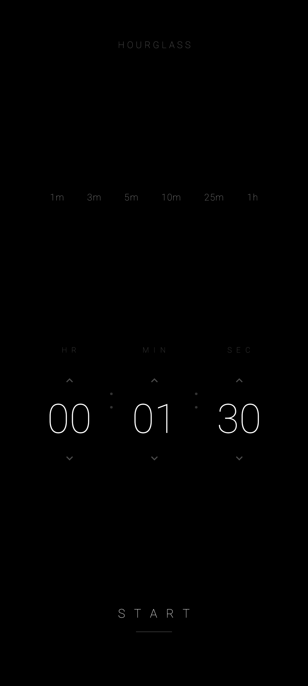

An ultra-minimalist particle-physics hourglass timer for Android. Real sand falls, piles, and slumps under the device's own gravity. No network, no analytics, no ads.

Each grain is an independent particle that falls, collides, and is absorbed into a sand pile that grows toward 50 % of the screen as the timer ends.
The accelerometer feeds a live gravity vector into the slumping pass — tip the phone and the pile pours toward the lower edge.
Press anywhere while running to fade in the exact remaining
HH : MM : SS. Release to return to pure sand.
1m 3m 5m 10m
25m 1h seed the H R / M I N / S E C
pickers in a single tap.
Faint P A U S E opposite R E S E T; the
paused screen shows remaining time + percent left with a centered
R E S U M E.
FLAG_KEEP_SCREEN_ON is set only during the Running
state and cleared the instant the timer pauses, finishes, or
resets.
A Preferences DataStore persists the last started
H R / M I N / S E C so
pickers are pre-seeded on every launch.
A three-note ToneGenerator chime on the notification
stream plays alongside the vibration pulse — respects silent /
DnD.
| Version | Date | Notes |
|---|---|---|
| 1.2.0 | 2026-05-27 | Completion chime + persisted last duration. Notes → |
| 1.1.0 | 2026-05-27 | Quick presets, pause/resume, keep-screen-on. Notes → |
| 1.0.0 | 2026-05-27 | Initial release — particle hourglass core. Notes → |
VIBRATE only. No INTERNET, no location,
no camera, no storage. Nothing leaves the device.
각 모래알이 독립 입자로 떨어지고 충돌하며 화면 절반 높이까지 쌓입니다. 단순한 애니메이션이 아니라 실시간 시뮬레이션입니다.
가속도계가 중력 벡터를 실시간으로 넘기기 때문에, 기기를 기울이면 쌓인 모래가 낮은 쪽으로 쏠립니다.
실행 화면을 누르고 있는 동안만 정확한
HH : MM : SS가 떠오르고, 손을 떼면 다시
모래만 남습니다.
1m / 3m / 5m / 10m / 25m / 1h 한 번 탭으로
시·분·초가 채워집니다. 버튼이 아니라 얇은 라벨로 표시돼
화면을 깨끗하게 유지합니다.
P A U S E로 그 시점에 멈추고, 일시정지 화면에서
남은 시간과 잔여 비율을 표시합니다. R E S U M E
누른 순간부터 다시 카운트다운.
타이머가 도는 동안에만 화면이 꺼지지 않도록 플래그를 잡고, 일시정지·완료·리셋 즉시 해제합니다.
종료 후 다시 켜도 직전에 시작했던 시·분·초가 그대로 채워져 있어, 같은 시간을 반복해서 쓸 때 편합니다.
종료 시 진동과 함께 세 음짜리 짧은 톤이 울립니다. 무음 / 방해금지 설정을 그대로 따르며, 추가 권한이 필요 없습니다.